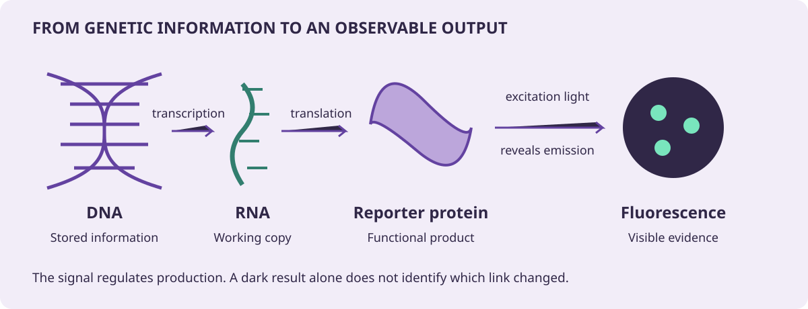

Finding DNA, cleaving DNA, and reprogramming what a cell produces are three distinct biological problems. Investigate each one using an engineered fluorescent reporter circuit.
From a bacterial immune defense to precision genome engineering
CRISPR systems evolved as adaptive microbial defenses against bacteriophage viruses. Molecular biologists adapted this system for targeted genetic editing: a synthetic guide RNA directs the Cas9 endonuclease to a complementary genomic address, while the host cell’s repair pathways determine the ultimate genetic outcome. Synthetic biology takes this further by treating biological components as standardized genetic circuits engineered for specific functions.
A gene is a sequence of DNA nucleotides encoding a functional product. In our reporter cell, the gene is transcribed from DNA into messenger RNA, which ribosomes translate into a fluorescent protein. By exciting this protein with specific wavelengths of light, we can directly observe whether our genetic edit succeeded.

A DNA edit can alter a protein, but visible fluorescence also depends on upstream promoter induction and excitation light. Follow each link before concluding that a dark colony has a disrupted gene. Original ClassroomOS schematic.
Guide RNA: The Address
A 20-nucleotide targeting sequence plus an RNA scaffold. It confers sequence specificity through Watson-Crick base pairing; it does not cut or repair DNA.
Cas9: The Molecular Scissors
A bilobed endonuclease. SpCas9 requires an adjacent 5′-NGG-3′ PAM motif to trigger DNA unzipping before the guide can test for complementary pairing.
Cellular Repair: The Outcome
The host cell rejoins broken DNA through error-prone NHEJ (causing gene knockout) or template-directed HDR (incorporating donor sequences).
Molecular StructureCas9 ribonucleoprotein complex: The Streptococcus pyogenes Cas9 endonuclease bound to single-guide RNA (orange) and target DNA (cyan/blue). The enzyme scans target DNA, checks for an adjacent protospacer adjacent motif (PAM), and cleaves both strands only when the guide matches.
Source: Hiroshi Nishimasu et al. / Cell (CC BY 4.0), via Wikimedia Commons.Synthetic BiologyEngineered fluorescent reporters: "San Diego Beach Scene" painted with living colonies of Escherichia coli expressing eight distinct engineered fluorescent proteins (GFP, BFP, CFP, YFP, mRFP1, mCherry) under UV illumination in Roger Tsien's Nobel Prize-winning lab at UCSD.
Source: Nathan Shaner / Tsien Lab, UCSD (CC BY-SA 3.0), via Wikimedia Commons.
Where did CRISPR originate in nature?
In bacteria and archaea, CRISPR (Clustered Regularly Interspaced Short Palindromic Repeats) loci store short fragments of DNA captured from invading viruses (bacteriophages). Transcribed CRISPR RNAs (crRNAs) guide Cas endonucleases to recognize and cleave re-infecting phage DNA. In 2012, Emmanuelle Charpentier and Jennifer Doudna engineered this two-RNA bacterial system into a single chimeric guide RNA (sgRNA), creating a reprogrammable genome editing technology recognized with the 2020 Nobel Prize in Chemistry.
1
Can the guide RNA find its genomic address?
Test the two critical conditions for Cas9 binding: guide RNA complementarity and the adjacent PAM motif.
Investigation 1 · Two requirements for recognition
Predict whether a complementary guide will cleave without a valid PAM motif. Test the matching guide, introduce one mismatch, and switch between valid and mutated PAM motifs. Explain why both conditions must be met.
Genomic DNA Window (Target Strand)
Showing a 12-base teaching window. A real SpCas9 guide contains ~20 targeting bases paired with an 80-nt structural scaffold.
Non-target DNA strand with PAM, 5′ → 3′
ATGCCATAGCTATGG
Target DNA strand (complementary), 3′ → 5′
TACGGTATCGATACC
Guide RNA fragment, 5′ → 3′
Click any tile above to cycle base: A → U → C → G
Guide RNA pairs with the target DNA strand via Watson-Crick rules: A–U and C–G. The PAM (Protospacer Adjacent Motif) is a genomic motif required for enzyme binding; it is not part of the guide RNA.
Read 5′ to 3′. RNA uses Uracil (U) instead of Thymine (T).
SpCas9 recognizes 5′-NGG-3′, where N can be any nucleotide followed by two Guanines. Other CRISPR enzymes (e.g. Cas12a, CasX) utilize distinct motifs.
Load a guide sequence or click tiles to build your fragment, then check recognition.
2
A recognized site is not a finished edit
Watch Cas9 bind and cleave the double helix, then follow how host cell repair pathways handle the break.
Investigation 2 · Same double-strand break, three repair outcomes
Keep a matching guide and valid PAM. Step through each of the three cellular repair scenarios. Does every repaired cell lose reporter function? Examine the molecular sequence evidence below.
0. Interrogation
1. Recognition
2. Cleavage
3. Repair
Check a matching guide and valid PAM above to unlock the molecular cut model.
These scenarios model specific biological pathways, not universal editing efficiencies. Cleaving DNA alone does not guarantee a knockout or a successful knock-in.
Sequence evidence at the cleavage site
No repaired sequence yet. Complete the repair stage to examine molecular evidence.
Cas9 creates a double-strand break 3 base pairs upstream of the PAM. Cellular repair pathways determine the final nucleotide sequence.
Non-Homologous End Joining (NHEJ) rejoins the cut with a 1-base deletion. This creates a frameshift mutation that destroys reporter function.
3
Does the genetic change alter the cellular output?
Compare your engineered population against an unedited control in a synthetic biology genetic circuit.
Investigation 3 · Diagnose an unfluorescent population
With both signal and excitation light ON, compare each repair outcome. Next, turn OFF only the excitation light; then restore the light and turn OFF only the inducer signal. Can identical dark appearances have completely different molecular causes?
InputInducer Signal
→
PromoterInducible Switch
→
RBSRibosome Site
→
Reporter CDSGFP / CFP Gene
→
OutputFluorescence
In this synthetic circuit, an chemical inducer signal turns on transcription. Once synthesized, the reporter protein requires blue excitation light (488 nm) to fluoresce. Fluorescence requires absorbed incoming photons; it is distinct from enzymatic bioluminescence (such as a firefly's luciferase reaction).
Signal: ActiveFilter: Ambient Light
Both agar plates receive identical environmental conditions. In real laboratory experiments, CRISPR editing in cell populations produces a mosaic mixture of wild-type, indel, and knock-in alleles with varying efficiencies.
Key Concept: Can darkness prove that a gene was knocked out?
No! A functional reporter gene produces no fluorescence if the promoter inducer signal is missing (transcription is repressed) or if excitation light is absent. Scientists must always compare controls under identical conditions and perform DNA sequencing (such as NGS or Sanger sequencing) to verify genome edits.
Run an experiment comparison above, then click Record observation.
Check your reasoning
Test your understanding of molecular recognition, cellular repair pathways, and gene circuit regulation.
Loading question…
Sequence specificity vs. off-target activity
This classroom model requires an exact match at our 12-base fragment. In living cells, Cas9 endonucleases can tolerate some distal mismatches between the guide RNA and genomic DNA, occasionally cleaving unintended "off-target" sites. High-fidelity Cas9 variants (e.g. SpCas9-HF1, eSpCas9) and base editors have been engineered to minimize these risks.
Explain: Why do both guide RNA complementarity and PAM binding matter? What molecular evidence beyond visible fluorescence would you require before approving an in vivo therapeutic edit?
Designing synthetic biology circuits
Synthetic biology combines biological parts (promoters, ribosome binding sites, coding sequences, and terminators) into engineered circuits with predictable logic. CRISPR-Cas systems serve as modular tools to insert, delete, or regulate these genetic circuits.
Imagine designing a biosensor cell for aquatic environmental monitoring. What input signal should activate it? What could cause a false alarm? What biocontainment safeguards should be built in before deployment?
Your evidence-based claim
State the experimental condition you altered (Guide, PAM, Repair pathway, or Circuit input).
Compare the engineered cell population with the unedited control.
Explain the observed phenotype using molecular principles (gRNA, PAM, double-strand break, and repair pathway).
Identify at least one limitation or assumption of this simplified model.
Bioethics Extension: Somatic vs. Germline Gene Editing
Distinguish between somatic editing (treating non-reproductive cells in an existing patient, such as sickle cell anemia therapy via FDA-approved Casgevy) and germline editing (modifying embryos or gametes, where changes become heritable across future generations). Consider questions of patient consent, equity of access, unintended genetic consequences, and international regulatory oversight.